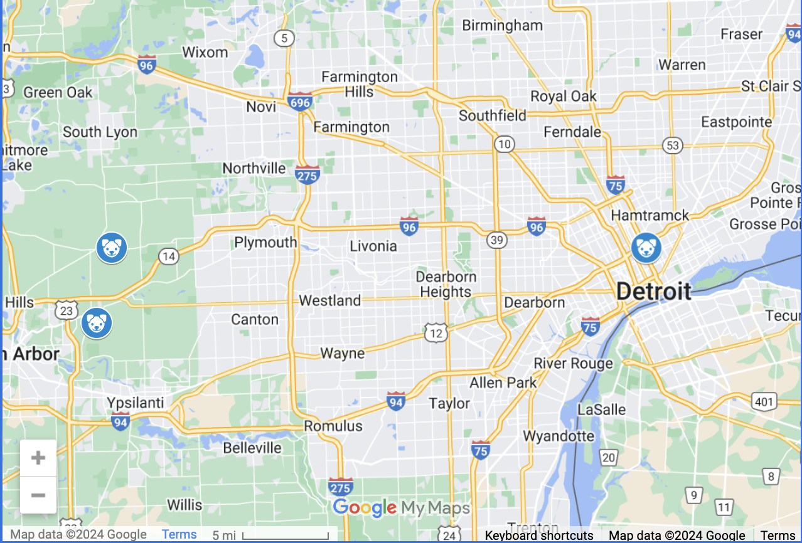

Support Our Friends & Family!
Below, you'll find a selection of our favorite resources for dog lovers. These include local adoption centers, nonprofit organizations, and other helpful services dedicated to supporting dogs in need. Whether you're looking to adopt, volunteer, or simply learn more, we hope you find these places as valuable and inspiring as we do! üêæ
Local Adoption Centers
Humane Society of Huron Valley
The Humane Society of Huron Valley (HSHV) provides loving care for homeless animals and helps them find forever homes.
They offer a wide range of services, including pet adoptions, humane education, and veterinary care,
all aimed at promoting the well-being of animals in the community.
Address: 3100 Cherry Hill Rd, Ann Arbor, MI 48105
Visit Site
Bottle Babies Rescue
Bottle Babies Rescue is a 501(c)(3) non-profit, foster-based animal rescue serving Southeast Michigan.
They specialize in neonatal care, bottle feeding, and providing critical care for the smallest and most
vulnerable animals. Their dedication to rescuing and nurturing orphaned animals ensures that even the
tiniest paws get a chance at a happy, healthy life.
Address: 6285 N Territorial Rd, Plymouth, MI 48170
Visit Site
Detroit Animal Care and Control
Detroit Animal Care and Control is dedicated to protecting the city's animals and residents by providing shelter,
medical care, and adoption opportunities for homeless pets. They work tirelessly to reunite lost pets with
their owners and to place adoptable animals in loving homes.
Address: 1431 E Ferry St, Detroit, MI 48211
Visit Site

Local and Beyond Nonprofit Organizations
These organizations work tirelessly to rescue, rehabilitate, and rehome dogs in need. Consider supporting them through donations or volunteer work:
Michigan Humane
Michigan Humane serves communities across Michigan, they focus on providing shelter, veterinary services, and education to ensure the well-being of animals.
Learn more about Michigan Humane
Dog Aide
Dog Aide offer resources, education, and assistance to ensure that every dog has a safe, loving home. Dog Aide's mission is to prevent homelessness and neglect of dogs through community involvement and outreach.
Explore Dog Aide
Best Friends Animal Society
Through adoption programs, community outreach, and advocacy, Best Friends Animal Society aim to reduce the number of homeless pets and end the killing of animals in shelters. Best Friends is committed to creating a world where all pets are loved and valued.
Discover Best Friends Animal Society
American Society for the Prevention of Cruelty to Animals (ASPCA)
The ASPCA is a national organization dedicated to preventing cruelty to animals and promoting animal welfare. They provide essential services such as veterinary care, cruelty investigations, and disaster response, all aimed at improving the lives of animals across the United States.
Get involved with ASPCA